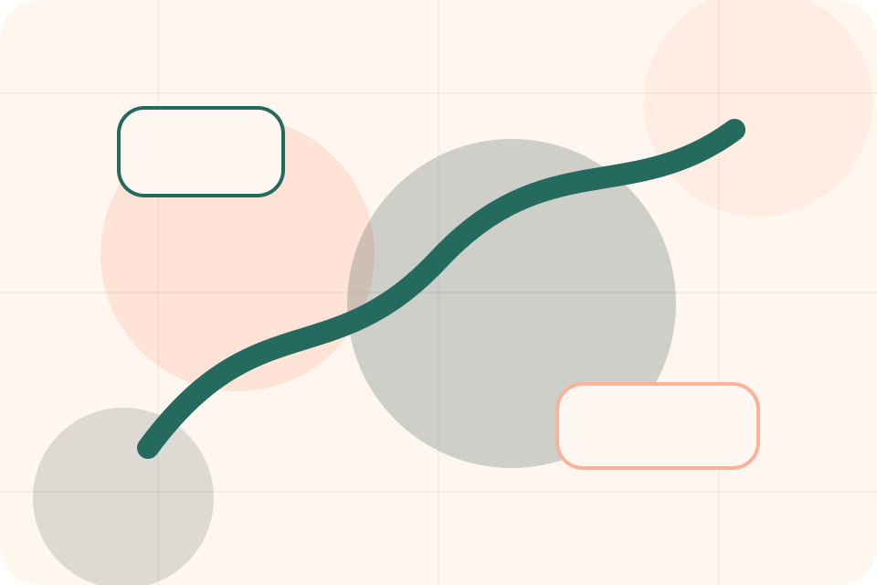

Pricing / 01
Pricing by Paw
Pricing shaped for pets, animals & veterinary services decisions.
Pricing opens as a clear pets decision hub: what Paw offers, who it helps, why it matters, and which route to take first.
The first screen combines positioning, proof, primary action, and fast internal navigation, so people can act immediately or compare the rest of the pricing route with context.
Clear intakeHuman follow-upPractical reassurance
Warm appointment hero
Route the care need
Select the closest route and Paw keeps the next step, proof, and follow-up expectation aligned with care and quick triage.

Pricing / 02
Consults
Consults makes commercial comparison easier by showing fit, scope, and terms before pets visitors ask for the next step.
The layout keeps price-sensitive decisions honest: it separates starting scope, fuller delivery, and ongoing support so the visitor can ask a sharper question.
Explore PricingFit
Who the offer is for, which scope it suits, and when a different route may be better.
Scope
What is included clearly enough for pets, animals & veterinary services visitors to compare value without hidden jargon.
Terms
The practical details that should be confirmed before someone asks to book a visit.
Pricing / 03
Procedures
Procedures makes commercial comparison easier by showing fit, scope, and terms before pets visitors ask for the next step.
The layout keeps price-sensitive decisions honest: it separates starting scope, fuller delivery, and ongoing support so the visitor can ask a sharper question.
Explore PricingFit
Who the offer is for, which scope it suits, and when a different route may be better.
Pricing / 04
Packages
Packages makes commercial comparison easier by showing fit, scope, and terms before pets visitors ask for the next step.
The layout keeps price-sensitive decisions honest: it separates starting scope, fuller delivery, and ongoing support so the visitor can ask a sharper question.
View PricingFit
Who the offer is for, which scope it suits, and when a different route may be better.
Scope
What is included clearly enough for pets, animals & veterinary services visitors to compare value without hidden jargon.
Terms
The practical details that should be confirmed before someone asks to book a visit.
Consult
Who the offer is for, which scope it suits, and when a different route may be better.
ScopedPlan
What is included clearly enough for pets, animals & veterinary services visitors to compare value without hidden jargon.
QuotedMaintain
The practical details that should be confirmed before someone asks to book a visit.
RetainerPricing / 05
Insurance
Insurance makes commercial comparison easier by showing fit, scope, and terms before pets visitors ask for the next step.
The layout keeps price-sensitive decisions honest: it separates starting scope, fuller delivery, and ongoing support so the visitor can ask a sharper question.
Explore Pricing- 01
Fit
Who the offer is for, which scope it suits, and when a different route may be better.
- 02
Scope
What is included clearly enough for pets, animals & veterinary services visitors to compare value without hidden jargon.
- 03
Terms
The practical details that should be confirmed before someone asks to book a visit.
Pricing / 06
Payments
Payments makes commercial comparison easier by showing fit, scope, and terms before pets visitors ask for the next step.
The layout keeps price-sensitive decisions honest: it separates starting scope, fuller delivery, and ongoing support so the visitor can ask a sharper question.
Explore PricingFit
Who the offer is for, which scope it suits, and when a different route may be better.
Scope
What is included clearly enough for pets, animals & veterinary services visitors to compare value without hidden jargon.
Terms
The practical details that should be confirmed before someone asks to book a visit.
Pricing / 07
Inclusions
Inclusions makes commercial comparison easier by showing fit, scope, and terms before pets visitors ask for the next step.
The layout keeps price-sensitive decisions honest: it separates starting scope, fuller delivery, and ongoing support so the visitor can ask a sharper question.
Explore PricingFit
Who the offer is for, which scope it suits, and when a different route may be better.
Pricing / 08
Policies
Policies makes commercial comparison easier by showing fit, scope, and terms before pets visitors ask for the next step.
The layout keeps price-sensitive decisions honest: it separates starting scope, fuller delivery, and ongoing support so the visitor can ask a sharper question.
Explore PricingFit
Who the offer is for, which scope it suits, and when a different route may be better.
Scope
What is included clearly enough for pets, animals & veterinary services visitors to compare value without hidden jargon.
Terms
The practical details that should be confirmed before someone asks to book a visit.
Pricing / 09
Quote
Quote converts customer proof into a useful buying signal: the problem, the experience, and what changed afterward.
Proof stays believable by focusing on situation, service experience, and practical change rather than vague praise or unsupported results.
Book Visit- 01
Situation
What the visitor needed before choosing Paw, written with enough context to feel real.
- 02
Experience
How the service, product, or support felt during the process, not just that it was good.
- 03
Change
What became easier to decide, complete, buy, book, or trust after the interaction.
Pricing / 10
Book Visit
Paw closes the pricing route with a clear action, a quick reminder of the value, and a low-friction way to book a visit.
Visitors who are ready can use the primary action. Visitors who are still comparing can scan the section links, proof, and support routes before they book a visit.
Book VisitThe final block keeps the choice simple: act now, compare one more proof route, or send enough detail for a focused response.
Book Visitcare and quick triage
Book Visit
A veterinary site with warm urgent-care modules, appointment paths, team proof, and symptom routing. Pricing ends with a direct path to book a visit, plus enough context for visitors who still need to compare.
Notes
Pet health content is general; urgent symptoms require direct veterinary care.